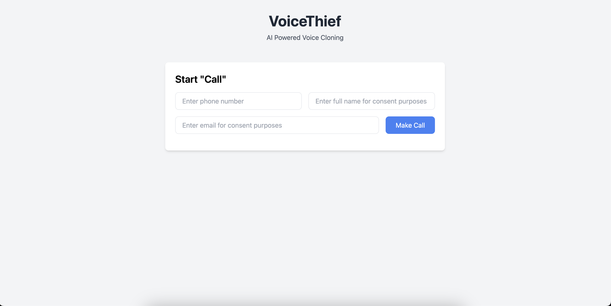

← Back to Home
VoiceThief
Overview
An educational tool to raise awareness about the potential dangers of voice cloning technology, developed for the Iowa State University Ivy Hackathon 2024 where it placed 3rd in the technical category.
Key Features
- Demonstrates risks of AI-powered voice cloning
- Proof of concept for targeted phishing attacks
- Built to educate about emerging AI technologies